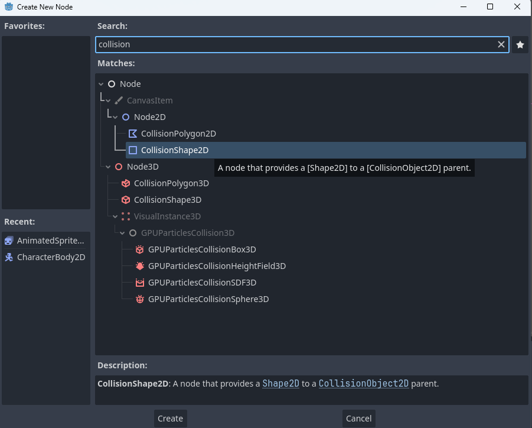
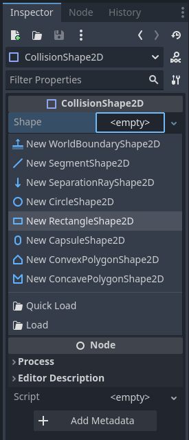
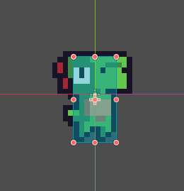
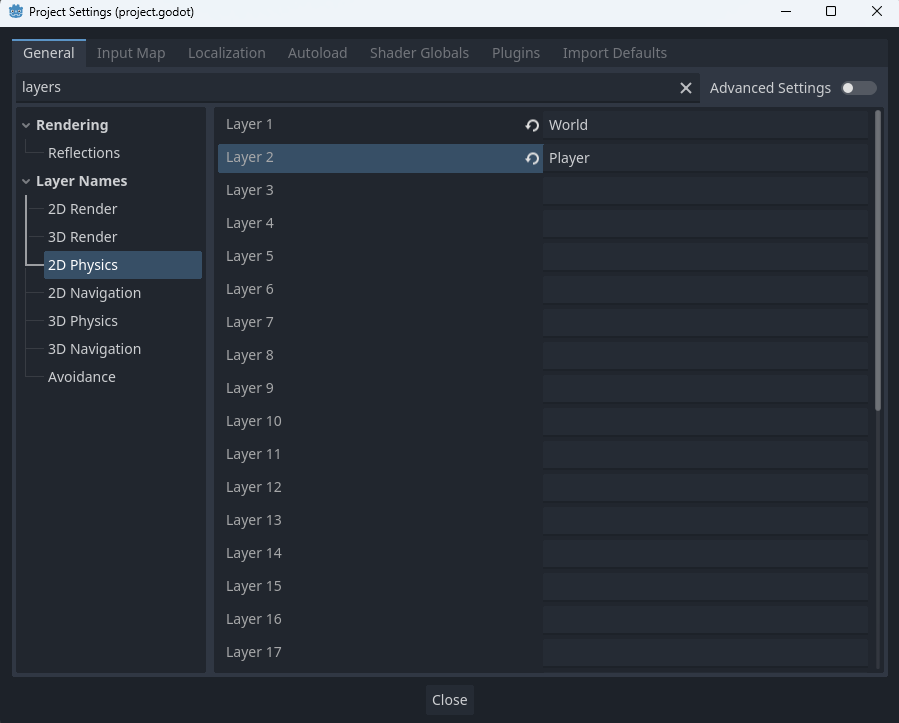
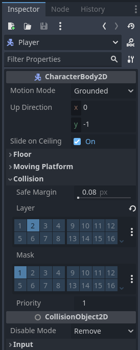

Creating the Player Scene (Part 2)
On this page we will continue creating our player scene by adding our player's collision shape and camera!
Player Collisions
In order to add collisions (or the ability for the player to run into and walk on things), we will need to add a new node to our player. Right click the player node, select add a new child node and find the CollisionBody2D node in the new node menu.
You may notice an error on the CollisionShape2D node. That is because we have not yet actually given it a shape to use. We can remedy this by selecting it and looking in the inspector for shape element, selecting the dropdown and creating a NewRectangleShape2D
This will create a blue box in our viewport that we can resize to fit our player's sprite! This is how mine looks once I am done.
I usually prefer my player's collision shape to hug pretty close to the body, but you can choose what feels best for you. Just make sure the bottom of the collision shape lines up with the player's feet!
Next we still need to let Godot know how and what we want our player to collide with. We do this through Layers and Masks. Layers are effectively groups of physic objects, whereas masks tell what layers an object should collide with. For example, our player will be on the Player layer, but will have the World mask (as we want the player to collide with terrain and not other players). But before we can set our layers and masks, we have to name them first! Go to your project settings (found under the project tab in the top bar) and navigate to the Layer Names/2D Physics section. Name Layer 1 World and Layer 2 Player.
Then, select our Player node (not the CollisionShape2D node) and look at the inspector. Under the collision section you will see the player's current layers and masks. For layers deselect world (1) and select player (2). Masks can stay with world (1) selected.
Player Camera
The last node we need for our player scene is a camera. Select our Player node and add a new child node. Find the Camera2D node in the menu. We will be editing the camera's options more later on, but for now your player scene should look like this:

Finally, let's save the player scene. Right click the tab at the top of the viewport (or press control + s) to save the scene. Go ahead and rename it player.
I like to store my saved scenes in a Scene folder in the file system.
And your done with the player scene! Congrats! In the next section we will start making a test level for our player to stand on.